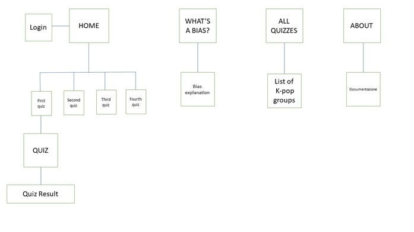
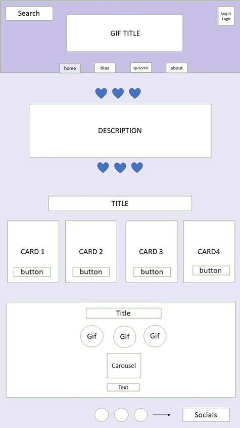
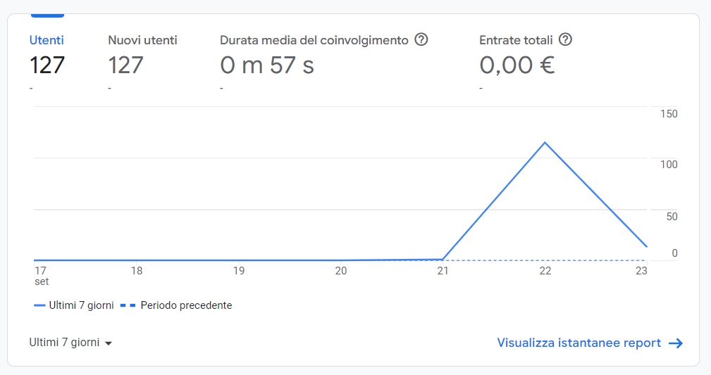
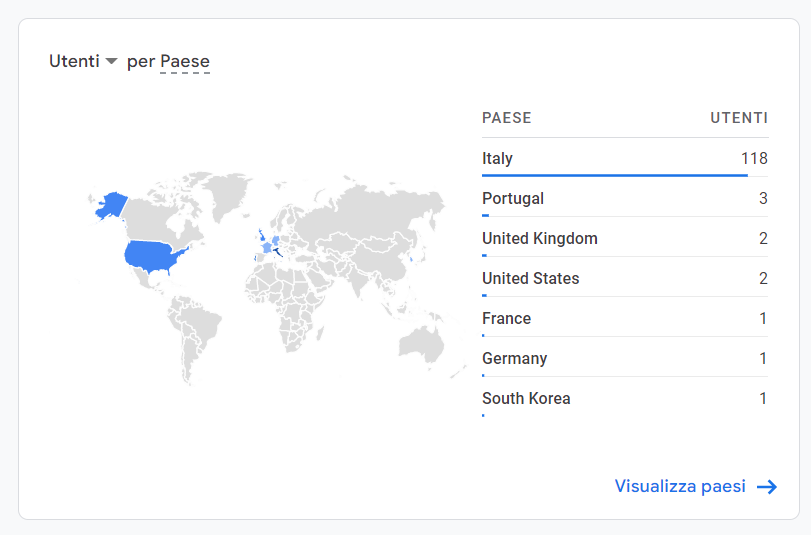

PROJECT MANAGEMENT PLAN
0. ABSTRACT
Il sito “Find My Bias” è stato pensato per chi sta iniziando ad interessarsi alla musica pop coreana. Questo genere di musica, che sta diventando sempre più popolare al di fuori della Corea, può mettere in difficoltà chi ci si approccia per la prima volta dati i problemi della barriera linguistica e delle differenze culturali. In questo specifico caso il sito spiega cosa sono i “Bias” nel mondo del K-pop.
1. BENCHMARKING
1.1 Obiettivi
Il tema del sito è il K-pop è nello specifico quello di trovare il proprio membro preferito nei gruppi K-pop, ovvero il proprio “Bias”. L’obiettivo è facilitare l’utente in questa ricerca: poiché i gruppi K-pop sono spesso molto numerosi non è facile trovare il proprio membro preferito. Per questo motivo tramite quiz con domande che raccolgono diverse preferenze personali ho pensato potesse essere più facile trovare il membro del gruppo più simile all’utente e di conseguenza il suo possibile preferito. Senza doversi fermare solo ad ascoltare musica K-pop, l’utente può effettivamente entrare a partecipare attivamente in questo mondo musicale piuttosto diverso da quello occidentale.
Poiché è un sito pensato anche per chi non conosce ancora il mondo del K-pop ho deciso di includere una pagina che spiegasse cosa fosse il “Bias”.
1.2 Target Utente
Il target di questo sito sono sia le persone che sono nuove nel mondo del K-pop sia le persone che hanno già conoscenze e già sanno cos’è un “Bias”. Il target ha in media un’età compresa tra i 16 e i 25 anni, per questo motivo ho deciso di dare un look al sito che ricordasse i quiz sulle riviste per ragazzi che si compravano in edicola a fine anni ‘90 e all’inizio degli anni 2000 (es. Cioè, Big). Anche in questi giornalini era possibile trovare dei quiz che avrebbero indicato quale sarebbe potuto essere il nostro membro preferito di un gruppo musicale.

1.3 Competitors
I competitors che ho scelto sono: https://www.beano.com/ (nello specifico la pagina https://www.beano.com/posts/who-is-your-bts-bias-quiz) e https://www.proprofs.com/quiz-school/browse (nello specifico la pagina https://www.proprofs.com/quiz-school/story.php?title=we-know-which-bts-member-should-really-be-your-bias-quiz_2ca )
- Beano: questa pagina ha un target di età simile a quello di “Find My Bias” ma è indirizzato quasi unicamente ad un target che già conosce il significato di “Bias” poiché non viene spiegato in nessuna pagina. Inoltre il risultato del quiz non descrive approfonditamente il membro del gruppo a differenza del mio sito “Find My Bias” che nel risultato include anche un link alla pagina Instagram e Spotify dell’artista.
- Proprofs : la pagina usa una palette di colori molto spenta e neutra a differenza del mio sito “Find My Bias” dove ho voluto utilizzare una palette di colori più accesa e rendere il sito più allegro e giocoso. Inoltre è presente un errore poiché quando appare il risultato finale del quiz sul gruppo K-pop “BTS” è stata inserita un’immagine di un altro gruppo K-pop.
In più rispetto ad entrambe queste pagine ho voluto inserire nella home page una sezione dove elencare tutte le nuove uscite di album K-pop della settimana grazie ad un carousel.
2. STRUTTURA E LAYOUT
2.1 Architettura
2.2 Wireframe

2.3 Look and feel
Font: Il font utilizzato per tutto il sito è Montserrat Regular 400. Ho trovato che fosse un font facile da leggere ed esteticamente pulito.
Colori: La scelta dei colori sul viola e rosa ricordano (come spiegato nel punto 1.2) le riviste per ragazzi degli anni ‘90 e 2000. Il colore del testo è sempre nero per risaltare meglio sui colori che ho utilizzato.
3. LINGUAGGI E STRUMENTI
3.1 Linguaggi:
- HTML
- CSS
3.2 Strumenti:
- Google Font
- Bootstrap
- We3school
- Fontawesome
- Github
- Google Analytics
COMMUNICATION STRATEGY
1. Background
L’idea di questo sito è nata perché da fan del K-pop mi è capitato spesso di cercare siti che avessero lo stesso concept di “Find My Bias”. Cercando su Google però ho trovato siti che non erano esteticamente soddisfacenti e dedicati solo a persone che già conoscevano l’esistenza di un “Bias”. Partendo dai siti Beano e Proprofs ho deciso di creare un sito che fosse graficamente accattivante e divertente, che tutti i contenuti fossero corretti e che fosse interamente dedicato a questo argomento. Inoltre ho aggiunto punti di ancoraggio per tutti coloro che sono nuovi nel mondo del K-pop.
2. Obiettivi comunicativi
L’obiettivo di “Find My Bias” è quello di fare appassionare più gente al K-pop ed entrare in questo mondo in maniera facile ed intuitiva.
3. Target audience
Il target audience di questo sito sono i ragazzi dai 16 ai 25 anni che sono facilmente raggiungibili tramite social e in particolar modo Instagram. Inoltre ho voluto creare il sito interamente in inglese per raggiungere un target che non fosse esclusivamente italiano.
4. Promozione
La promozione del sito avverrà tramite social in particolare con la creazione di una pagina Instagram e pubblicità grazie ad un post e Instagram Stories.
5. Valutazioni dei risultati
L’obiettivo era di arrivare ad almeno 20 like su un post sul profilo Instagram e almeno 20 followers sempre sullo stesso profilo Instagram. Inoltre di registrare almeno 50 entrate sulla pagina web.
Gli obiettivi su Instagram sono stati raggiunti e superati: il post ha raggiunto i 30 likes e il profilo ha raggiunto i 43 followers.
Anche gli obiettivi riguardo le entrare sul sito sono stati raggiunti e superati: Il sito ha registrato l’entrata di 127 nuovi utenti.
E inoltre ha registrato anche l’entrata di utenti anche fuori dall’Italia.